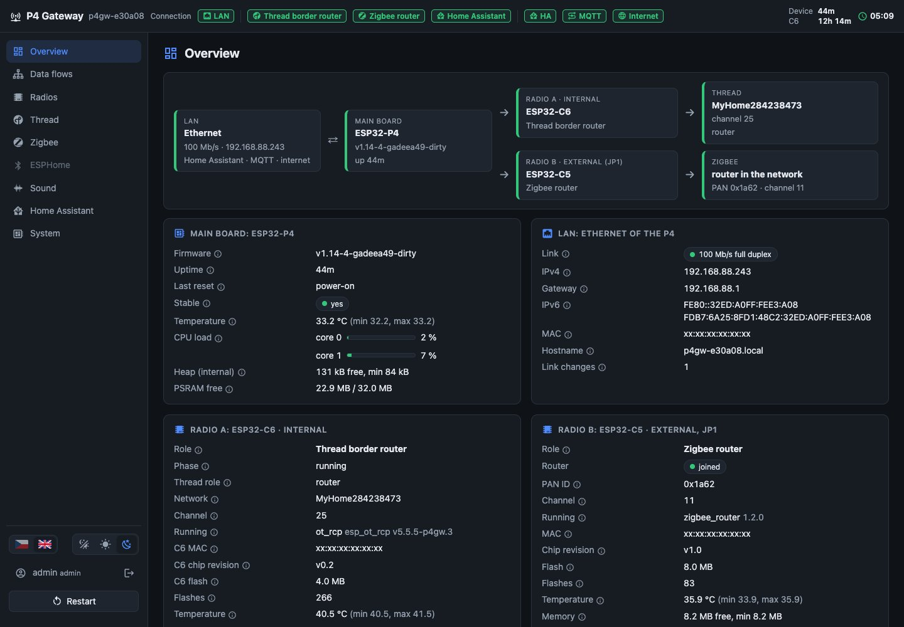
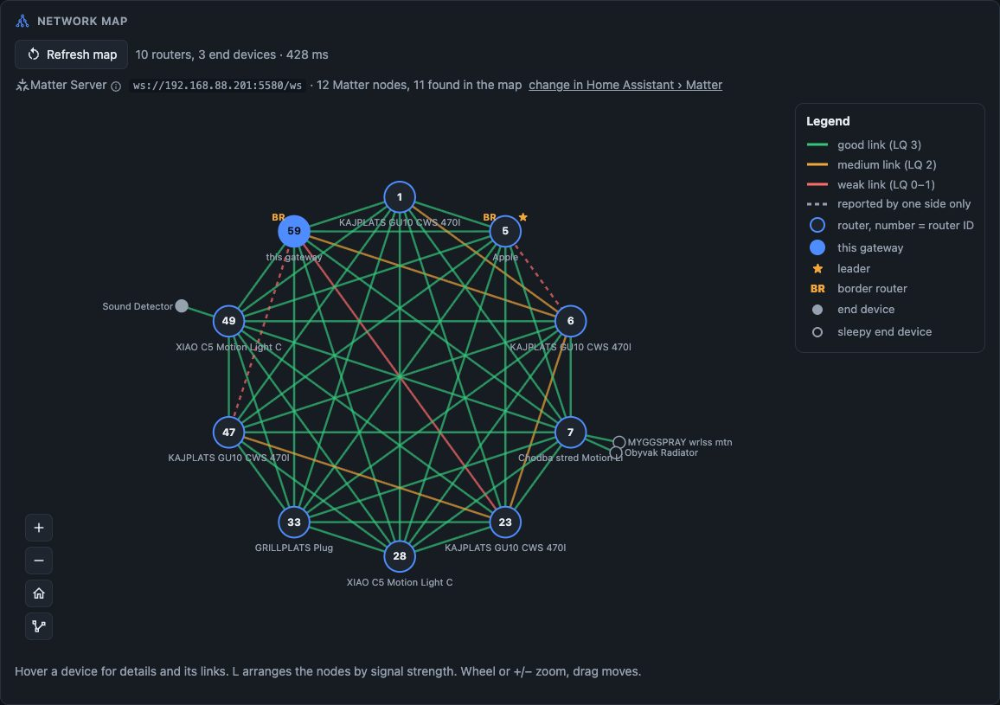
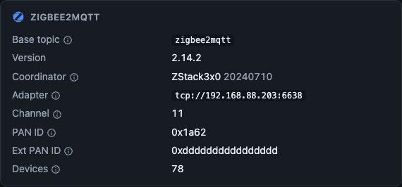
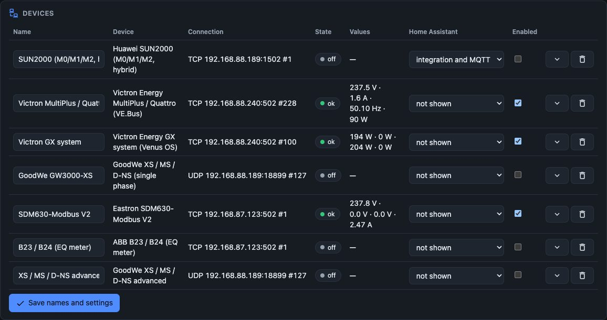
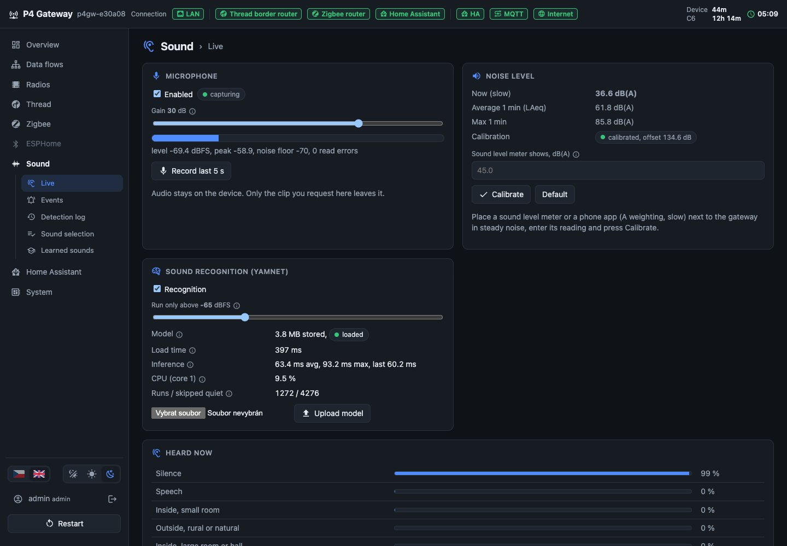
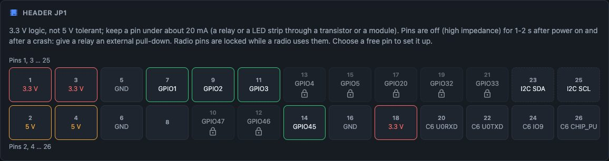
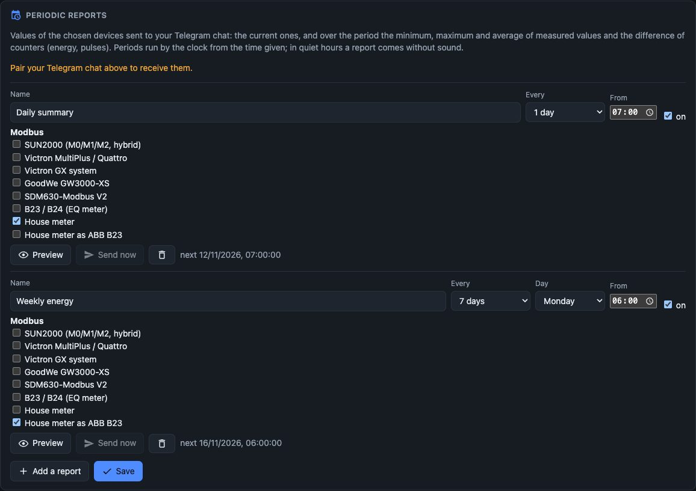
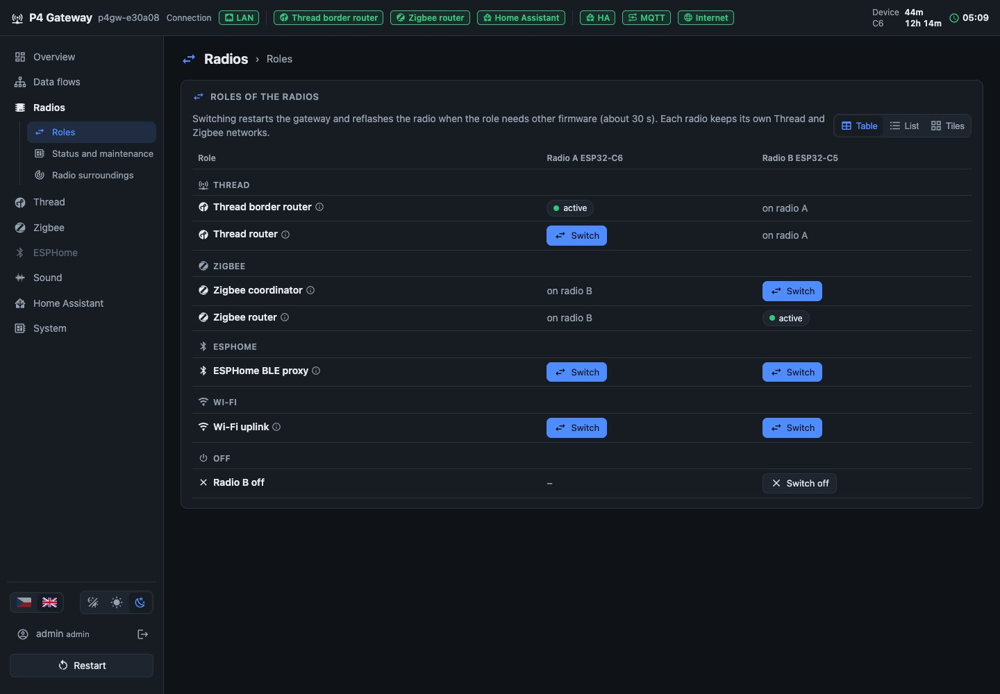

Thread a Matter, Zigbee, Bluetooth proxy, elektroměry a střídače na Modbusu, senzory, relé i rozpoznávání zvuků. Vše na jedné desce ESP32-P4 ve vaší síti, nastavené v prohlížeči a ihned dostupné v Home Assistant.Thread and Matter, Zigbee, a Bluetooth proxy, meters and inverters on Modbus, sensors, relays and sound recognition. All on one ESP32-P4 board on your network, configured in the browser and instantly available in Home Assistant.

Jedna úsporná deska, která se o sebe postará sama, místo několika USB adaptérů, Raspberry Pi a cloudových aplikací.One efficient, self-maintaining board instead of several USB dongles, a Raspberry Pi and cloud apps.
Vše běží na desce ve vaší síti. Žádný účet u výrobce, žádné předplatné, data zůstávají doma.Everything runs on the board in your network. No vendor account, no subscription, data stays at home.
Thread i Zigbee najednou: rádio A je přímo na desce, jako rádio B poslouží volitelný modul XIAO ESP32-C5. Role rádií přepnete jedním kliknutím.Thread and Zigbee at the same time: radio A on the board and an optional XIAO ESP32-C5 as radio B. Switch roles in one click.
Vlastní integrace z HACS, MQTT broker není potřeba. Zařízení, senzory i piny se v Home Assistant objeví automaticky.A dedicated integration from HACS, no MQTT broker needed. Devices, sensors and pins appear in Home Assistant automatically.
Deska Guition JC-ESP32P4-M3-DEV s Ethernetem nahradí hned několik USB adaptérů i jednodeskový počítač.A Guition JC-ESP32P4-M3-DEV with Ethernet replaces several USB dongles and a single-board computer.
Nové verze nainstalujete přímo z GitHubu, v případě potřeby se vrátíte ke starší. Nastavení snadno zazálohujete.Install new releases straight from GitHub, roll back when needed and back up your settings.
Uživatelské účty s rolemi a oprávněními pro jednotlivé stránky, dvoufázové ověření a API tokeny.User accounts with roles and per-page permissions, two-factor authentication and API tokens.
Brána sbírá data z rádiových sítí, sběrnic i vlastních čidel a předává je tam, kde je potřebujete. Každé rádio plní jednu roli, kterou lze kdykoli změnit.The gateway collects data from radio networks, buses and its own sensors and passes it where you need it. Each radio has a single role that you can change at any time.
Několik příkladů toho, co brána zvládne hned po nastavení v prohlížeči. Bez programování.A few examples of what the gateway can do as soon as it is set up in the browser. No coding required.
Brána plní roli plnohodnotného OpenThread Border Routeru. Home Assistant se k ní připojí integrací OTBR a zařízení Matter pak párujete přímo z telefonu.The gateway is a full-featured OpenThread Border Router. Home Assistant connects to it through the OTBR integration, and you pair Matter devices right from your phone.

Síťový koordinátor Zigbee dostupný přes TCP (port 6638), nebo router, který rozšíří dosah vaší sítě Zigbee. Síť se zálohuje automaticky.A network Zigbee coordinator over TCP (port 6638), or a router that extends the range of your Zigbee network. The network is backed up automatically.

Zařízení na RS485 i Modbus TCP připojíte pomocí hotových šablon pro Eastron, ABB, Chint, ORNO, Peacefair, Victron, GoodWe a Huawei. Brána je může zpřístupnit dalším systémům jako server Modbus TCP, nebo jeden elektroměr vydávat za jiný.Connect RS485 and Modbus TCP devices with ready-made templates for Eastron, ABB, Chint, ORNO, Peacefair, Victron, GoodWe and Huawei. The gateway can share them with other systems as a Modbus TCP server, or present one meter as another.

Vestavěný mikrofon a model YAMNet běžící přímo na čipu rozpoznají 521 druhů zvuků. Bránu naučíte i vlastní zvuky a změří vám hladinu hluku v dB(A).The built-in microphone and the YAMNet model running on the chip recognise 521 sound classes. You can also teach it your own sounds, and it measures noise levels in dB(A).

24 ovladačů senzorů I2C (teplota, vlhkost, CO2, prašnost, osvětlení) a volné piny konektoru JP1, které poslouží jako vstupy, výstupy, PWM, čítače impulzů z vodoměru, teploměry 1-Wire, LED pásek WS2812 nebo most UART-TCP.24 I2C sensor drivers (temperature, humidity, CO2, particulate matter, light) and the free pins of header JP1 as inputs, outputs, PWM, water meter pulse counters, 1-Wire thermometers, a WS2812 LED strip or a UART-TCP bridge.

Bot posílá upozornění a přijímá příkazy. Každý uživatel si nastaví vlastní pravidelné přehledy: aktuální hodnoty, minima, maxima, průměry a spotřebu energie za den či týden.The bot sends alerts and takes commands. Each user can schedule their own reports: current values, minimum, maximum, average and daily or weekly energy use.

Vše nastavíte v prohlížeči na počítači i v mobilu. Tmavý i světlý vzhled a nápověda u každé karty.Configure everything in the browser on desktop or mobile, with dark and light themes and help on every card.
Deska Guition JC-ESP32P4-M3-DEV s Ethernetem a rádiem ESP32-C6. Druhé rádio, XIAO ESP32-C5, připojíte ke konektoru JP1.A Guition JC-ESP32P4-M3-DEV board with Ethernet and an ESP32-C6 radio. A second XIAO ESP32-C5 radio plugs into header JP1.
| ProcesorProcessor | ESP32-P4, 32 MB PSRAM |
| SíťNetwork | Ethernet 100 Mbit/s, záložní připojení přes Wi-Fi rádia100 Mbit/s Ethernet, Wi-Fi backup through a radio |
| Rádio ARadio A | ESP32-C6: Thread, Zigbee, Bluetooth |
| Rádio B (volitelné)Radio B (optional) | XIAO ESP32-C5: Thread, Zigbee, Bluetooth, Wi-Fi 5 GHz5 GHz Wi-Fi |
| RozhraníInterfaces | RS485 (J4), I2C (CN3), GPIO JP1, mikrofonmicrophone |
| OvěřenoTested | 57 automatických testů hardwaru a 39 testů rozhraní57 automated hardware tests and 39 UI tests |

Stáhněte nejnovější vydání z GitHubu a nahrajte ho přes USB. Další aktualizace už nainstalujete z prohlížeče.Download the latest release from GitHub and flash it over USB. Future updates install from the browser.
Otevřete http://p4gw-xxxxxx.local, zvolte Thread, Zigbee nebo Bluetooth a přidejte zařízení Modbus či senzory.Open http://p4gw-xxxxxx.local, pick Thread, Zigbee or Bluetooth and add Modbus devices or sensors.
Integraci P4 Gateway nainstalujete z HACS a Home Assistant bránu v síti najde sám.Install the P4 Gateway integration from HACS and Home Assistant finds the gateway on its own.
Popis všech stránek rozhraní se snímky obrazovky, česky i anglicky.Every page of the web interface with screenshots, in Czech and English.
Sestavení, první instalace, aktualizace a obnova.Building, first installation, updates and recovery.
Deska, propojky JP1, rozložení pinů a rádio B.The board, JP1 jumpers, pinout and radio B.
Integrace, OTBR, Matter, Zigbee2MQTT, MQTT.Integration, OTBR, Matter, Zigbee2MQTT, MQTT.
Šablony, hledání, server, emulace.Templates, search, server, emulation.
Vstupy, výstupy, PWM, čítače, 1-Wire, WS2812.Inputs, outputs, PWM, counters, 1-Wire, WS2812.
Bot, příkazy, periodické zprávy.Bot, commands, periodic reports.
128 endpointů s ukázkami volání.128 endpoints with request examples.
Projekt je zdarma a s otevřeným kódem a vyvíjím ho ve volném čase. Příspěvek pomůže pokrýt hardware na testování (rádia, elektroměry, střídače) a čas na nové funkce. Děkuji!The project is free and open source, and I develop it in my spare time. A contribution helps cover test hardware (radios, meters, inverters) and time for new features. Thank you!
Rychlý příspěvek kartou nebo z účtu PayPal, částku zvolíte sami.A quick gift by card or from your PayPal account, any amount you like.
Otevřený kód, žádný cloud, žádné předplatné. Vyzkoušejte ji ještě dnes.Open source, no cloud, no subscription. Try it today.